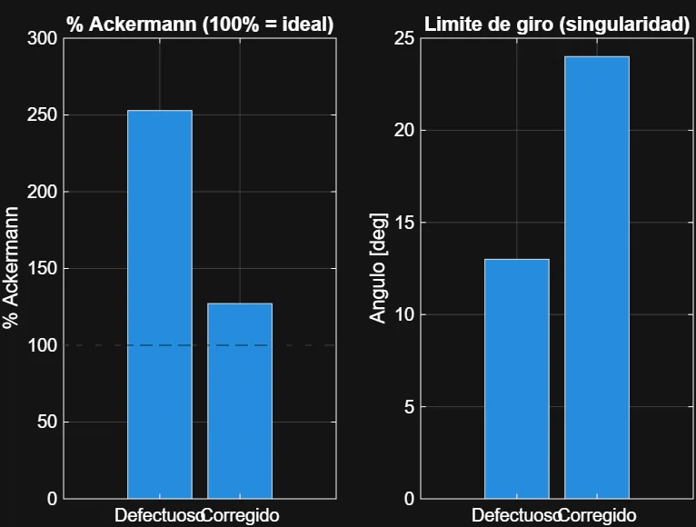
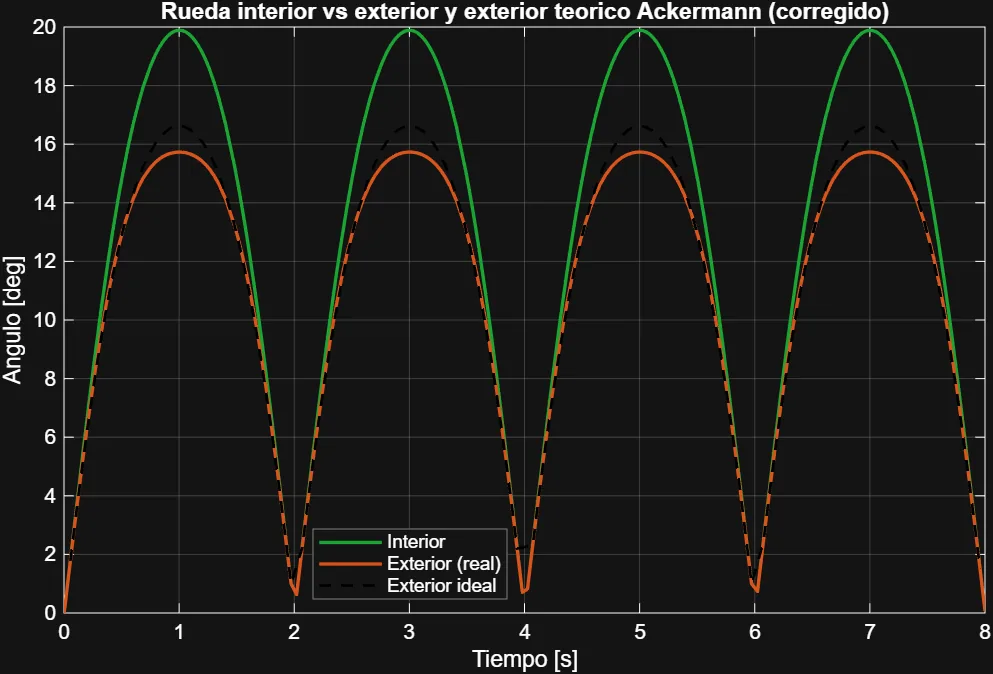
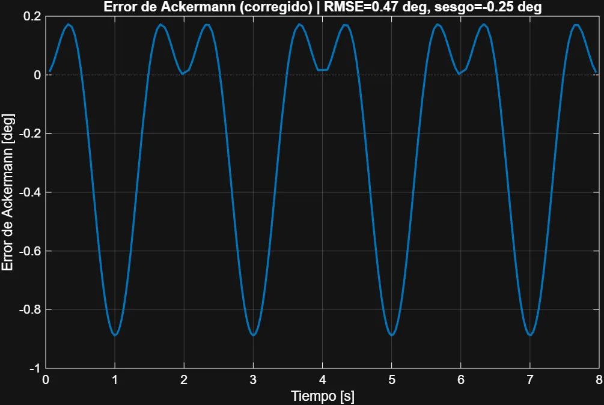
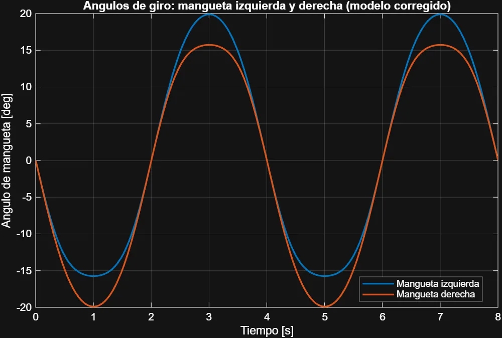
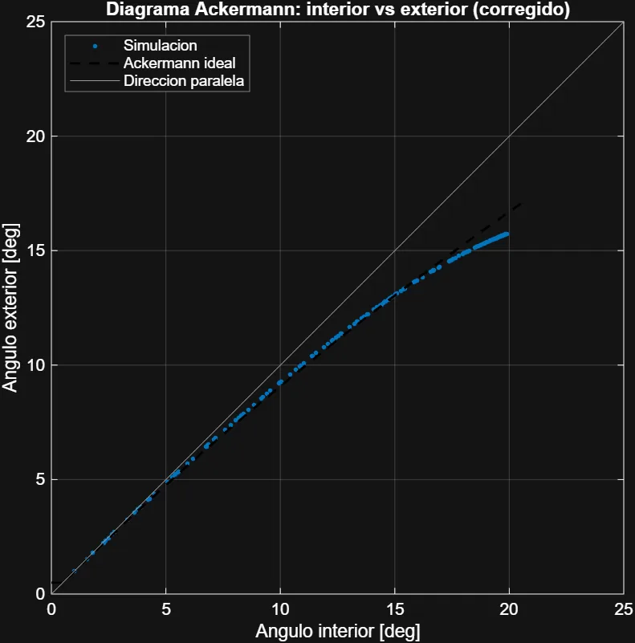

Caso 02 · Trabajo de Fin de Grado
La rueda exterior casi no giraba: encontré el punto muerto del mecanismo y rediseñé la dirección
Simulé en Simscape Multibody la dirección de un kart diseñado en SolidWorks, encontré por qué no cumplía la geometría de Ackermann, la corregí y validé el resultado en el CAD.
- Proyecto
- TFG «Diseño e integración de sistema de dirección y transmisión para un vehículo tipo kart amateur». Grado en Ingeniería Mecánica, Universidad de Vigo. Calificación: 8,5
- Fecha
- 2026
- Código
- github.com/estebanpinillaalva-spec/tfg-kart-direccion: scripts de MATLAB, modelo, gráficas y memoria completa
- Autoría
- Diseño CAD del kart en equipo con Martín. La simulación, el análisis y el rediseño de la dirección son trabajo propio. Los scripts de MATLAB los desarrollé dirigiendo a un agente de IA.
El problema
En una curva, la rueda interior tiene que girar más que la exterior para que las dos describan trayectorias concéntricas sin deslizar. Eso es la geometría de Ackermann. En un kart importa más porque no hay diferencial. El objetivo de diseño era un Ackermann del 100 %: con GeoGebra calculé que el brazo de la mangueta debía formar 107,62° con el eje del pivote.
Al simular el ensamblaje en Simscape, la primera versión no se comportaba así: la rueda exterior apenas giraba, el Ackermann superaba el 250 %, los dos lados respondían distinto y el mecanismo llegaba a una singularidad a ±13°.
Qué hice
- De SolidWorks a Simscape. Exporté el ensamblaje y lo importé con
smimportcomo modelo multicuerpo. - Diagnóstico. Las manguetas estaban bien diseñadas y comprobadas, así que busqué la causa en otra parte: la placa de dirección. Con el anclaje lateral y alejado de las bieletas, el cuadrilátero articulado del lado exterior trabajaba cerca del punto muerto y la rueda exterior casi no recibía giro.
- Rediseño. Acerqué al eje de la columna el anclaje de las dos bieletas, con un anclaje central único. Así el mecanismo vuelve a ser simétrico.
- Modelo paramétrico construido por código. Con un agente de IA desarrollé scripts de MATLAB que generan el modelo corregido con la geometría real (vía de 619,15 mm, batalla de 1.056,57 mm, bieleta de 305 mm y brazo de 120 mm), lo simulan, calibran el brazo y generan las gráficas y la animación.
- Validación en el CAD. Articulé la dirección en SolidWorks y medí los ángulos reales para contrastarlos con la simulación.
Lo que se torció y cómo lo resolví
- Los primeros resultados daban un Ackermann de más del doble del ideal. En lugar de justificarlos, analicé el modelo CAD hasta encontrar que el error venía de la placa de dirección.
- La simulación del modelo corregido daba un Ackermann del 127 %, un ligero exceso que atribuí a pequeños errores de medida. Lo contrasté con el CAD articulado, que dio un 112 % (17,81° / 14,81°).
Resultado
| Indicador | Anclaje lateral (antes) | Anclaje central (después) |
|---|---|---|
| % Ackermann simulado (giro a derecha / izquierda) | ≈253 % / ≈238 % | ≈127 % / ≈127 % |
| Error respecto a la rueda exterior ideal | −2,95° / −1,27° | −0,89° / −0,89° |
| Singularidad del mecanismo | ±13° | ~24° |
| Simetría entre giro a izquierda y a derecha | asimétrico | simétrico |
| Ackermann verificado en CAD | — | 112 % |





Limitaciones y siguiente paso
- El modelo es plano y cinemático: pivotes verticales, avance y salida nulos, sin neumáticos ni velocidad de avance.
- Falta dimensionar los topes físicos de dirección, que deben limitar el giro por debajo de la singularidad.
Herramientas
- SolidWorks
- MATLAB
- Simulink
- Simscape Multibody
- GeoGebra
- Cinemática de mecanismos